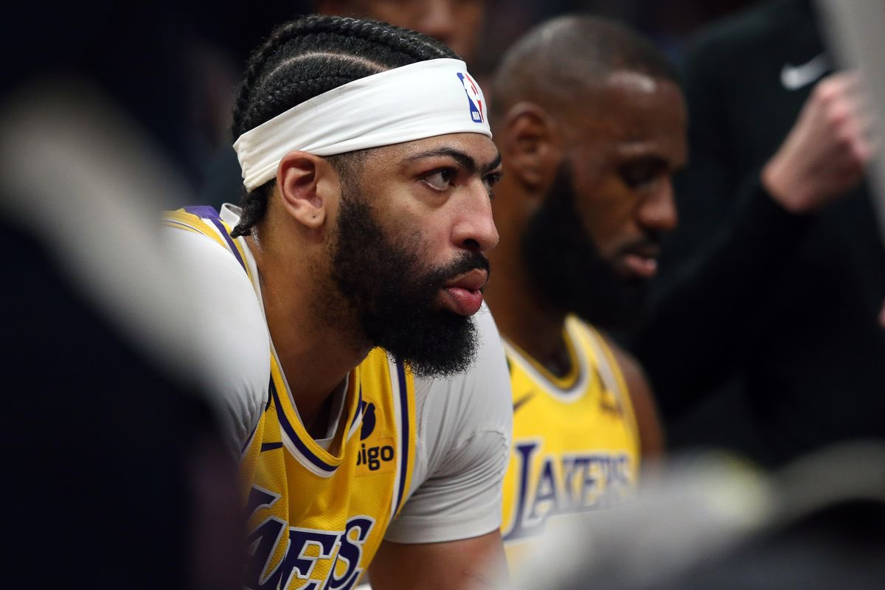
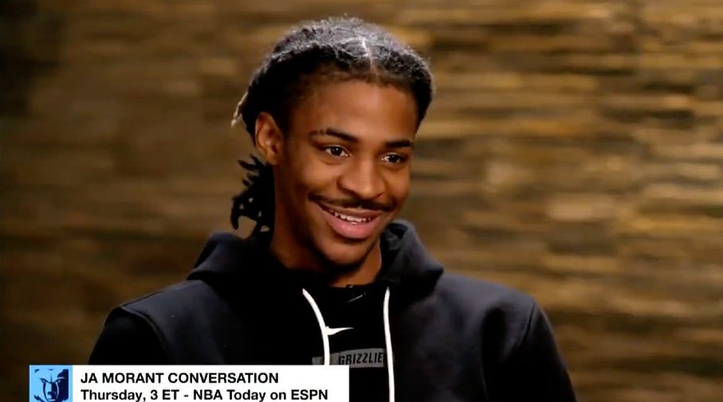
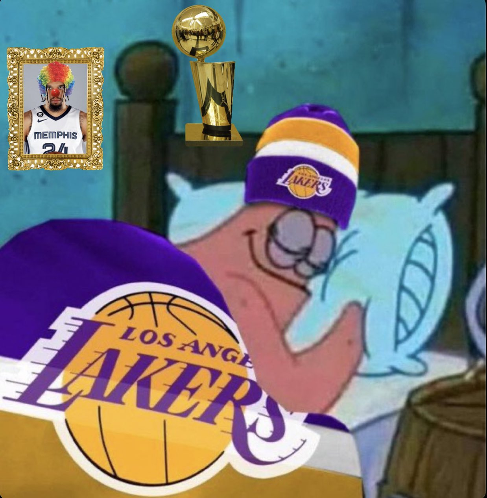

Publié le 27 avril 2023
Les Lakers peuvent-ils devenir champion NBA ?
Après un début de saison très difficile, depuis le All-Star break les Lakers sont sur une très bonne dynamique. Jusqu'où pourront-ils aller ? C'est la question qu'on s'est posé et...

Publié le 25 avril 2023
Ja aurait-il parlé trop vite ?
Les Celtics ! C'est la réponse qu'a donné Ja Morant quand il a été interrogé en début de saison sur les équipes qui pourraient lui poser problème. Aujourd'hui en difficulté contre les...

Publié le 24 avril 2023
Les Lakers dorment tranquille grâce à Dillon Brooks
Dillon Brooks a voulu provoquer Lebron James en avouant que pour lui le king était devenu trop vieux pour pouvoir l'embêter et qu'il ne le respecterait pas tant qu'il ne lui met...
Catégories
- Calendrier
- Site officiel Lakers
- A propos
- Regarder les matchs
- Ressources
- Boutique
Catégories
- Calendrier
- Site officiel Lakers
- A propos
- Regarder les matchs
- Ressources
- Boutique